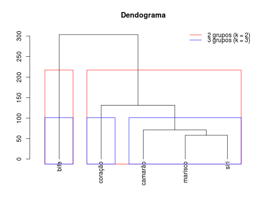

Dados provenientes de um estudo onde avaliou-se as variáveis energia, proteína, gordura, cálcio e ferro em 5 diferentes tipos de carnes. O estudo é apresentado em Bussab et al., 1990 sob o objetivo de agrupar os tipos de carne com base em sua informação nutricional.
Um data.frame com 5 observações e 5 variáveis, em que
enerprotgordcalcferroO tipo de carne é indicado conforme nomenclatura das linhas do
data.frame. Os tipos de carne marisco, siri e camarão são
todos enlatados.
FERREIRA (2011), Exercício 9.7.2, pág. 409.
Bussab, W. O., Miazaki, É. S., Andrade, D. F. (1990). Introdução à análise de agrupamentos. São Paulo, SP: ABE.
data(FerreiraEx9.7.2)#> Warning: data set ‘FerreiraEx9.7.2’ not foundFerreiraEx9.7.2#> ener prot gord calc ferro #> bife 340 20 28 9 2.6 #> coração 160 26 5 14 5.9 #> marisco 45 7 1 74 5.4 #> siri 90 14 2 38 0.8 #> camarão 110 23 1 98 2.6(cl2 <- kmeans(FerreiraEx9.7.2, 2))#> K-means clustering with 2 clusters of sizes 1, 4 #> #> Cluster means: #> ener prot gord calc ferro #> 1 340.00 20.0 28.00 9 2.600 #> 2 101.25 17.5 2.25 56 3.675 #> #> Clustering vector: #> bife coração marisco siri camarão #> 1 2 2 2 2 #> #> Within cluster sum of squares by cluster: #> [1] 0.00 11247.85 #> (between_SS / total_SS = 81.0 %) #> #> Available components: #> #> [1] "cluster" "centers" "totss" "withinss" "tot.withinss" #> [6] "betweenss" "size" "iter" "ifault"(cl3 <- kmeans(FerreiraEx9.7.2, 3))#> K-means clustering with 3 clusters of sizes 1, 1, 3 #> #> Cluster means: #> ener prot gord calc ferro #> 1 340.00000 20.00000 28.000000 9 2.600000 #> 2 160.00000 26.00000 5.000000 14 5.900000 #> 3 81.66667 14.66667 1.333333 70 2.933333 #> #> Clustering vector: #> bife coração marisco siri camarão #> 1 2 3 3 3 #> #> Within cluster sum of squares by cluster: #> [1] 0.000 0.000 4180.747 #> (between_SS / total_SS = 92.9 %) #> #> Available components: #> #> [1] "cluster" "centers" "totss" "withinss" "tot.withinss" #> [6] "betweenss" "size" "iter" "ifault"cbind("k = 2" = cl2$cluster, "k = 3" = cl3$cluster)#> k = 2 k = 3 #> bife 1 1 #> coração 2 2 #> marisco 2 3 #> siri 2 3 #> camarão 2 3(D <- dist(FerreiraEx9.7.2))#> bife coração marisco siri #> coração 181.66147 #> marisco 303.57180 131.15735 #> siri 253.09334 75.19980 58.24225 #> camarão 248.11086 97.93819 71.16769 63.91588hc <- hclust(D) plot(as.dendrogram(hc), main = "Dendograma")rect.hclust(hc, k = 2, border = 2)rect.hclust(hc, k = 3, border = 4)legend("topright", lty = 1, col = c(2, 4), bty = "n", legend = c("2 grupos (k = 2)", "3 grupos (k = 3)"))